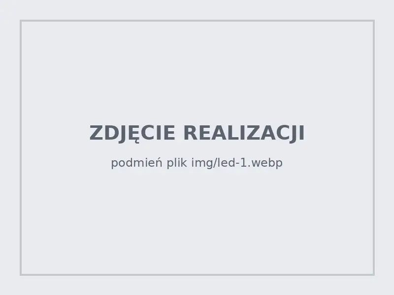

Reklama LED w Gdyni
Reklama LED w Gdyni to podświetlane szyldy, kasetony i litery przestrzenne, które wykonujemy dla sklepów, lokali usługowych, gabinetów i biur. Projektujemy, produkujemy i montujemy oznakowanie widoczne w dzień i po zmroku, na terenie Gdyni i Trójmiasta. Nie zajmujemy się ekranami LED – nasza specjalność to podświetlana reklama zewnętrzna na elewację i witrynę [UZUPEŁNIJ: potwierdź zakres, np. czy wykonujecie ekrany LED].
Reklama LED w Gdyni – co wykonujemy
Hasło „reklama LED” bywa rozumiane różnie – czasem chodzi o ekrany wyświetlające filmy, czasem o podświetlane oznakowanie firmy. My zajmujemy się tym drugim: szyldami i literami podświetlanymi diodami LED, które montujemy na elewacjach, nad wejściem i w witrynach.
W naszej ofercie znajdziesz:
- Kasetony podświetlane – skrzynki z grafiką na froncie, podświetlone od środka [UZUPEŁNIJ: jednostronne / dwustronne, kasetony semaforowe].
- Litery przestrzenne LED – pojedyncze litery i logo podświetlane od frontu, od tyłu (efekt halo) lub z boków [UZUPEŁNIJ: jakie warianty podświetlenia wykonujecie].
- Szyldy podświetlane – tablice z logo i nazwą firmy z podświetleniem LED [UZUPEŁNIJ: rodzaje, np. dibond z literami, plexi].
- Modernizację starych reklam – wymianę świetlówek na moduły LED w istniejących kasetonach [UZUPEŁNIJ: czy wykonujecie].
Jeśli szukasz oznakowania bez podświetlenia, zajrzyj na stronę o szyldach reklamowych w Gdyni.
Zalety podświetlenia LED w reklamie zewnętrznej
Podświetlenie LED zastąpiło dawne świetlówki i neony gazowe w większości reklam zewnętrznych. Powody są praktyczne:
- Widoczność po zmroku – w sezonie jesienno-zimowym robi się ciemno już po południu, a podświetlony szyld nadal pracuje na Twoją firmę.
- Niższe zużycie prądu – diody LED pobierają wyraźnie mniej energii niż świetlówki o podobnej jasności.
- Długa żywotność – moduły LED rzadziej wymagają wymiany, więc reklama mniej kosztuje w utrzymaniu.
- Równomierne światło – dobrze zaprojektowany kaseton świeci jednolicie, bez ciemnych plam i prześwitów.
- Swoboda projektu – LED-y mieszczą się w płytkich obudowach i małych literach, dzięki czemu reklama może być smukła i elegancka.
Podświetlenie można sterować zegarem lub czujnikiem zmierzchu, żeby reklama włączała się tylko wtedy, gdy jest potrzebna [UZUPEŁNIJ: czy montujecie sterowniki].
Kaseton, litery LED czy szyld podświetlany – co wybrać?
Każde z rozwiązań sprawdza się w innej sytuacji. Krótkie porównanie:
- Kaseton podświetlany – dużo miejsca na grafikę i tekst, dobra widoczność z daleka, rozsądny koszt przy większym formacie. Dobry wybór dla sklepów, punktów usługowych i lokali przy ruchliwych ulicach.
- Litery przestrzenne LED – najbardziej prestiżowy efekt, logo „wychodzi” z elewacji. Polecane dla marek, które chcą wyglądać nowocześnie: salony, restauracje, biura, kliniki. Zwykle droższe od kasetonu o podobnej szerokości.
- Szyld podświetlany – kompromis między ceną a wyglądem, np. tablica z podświetlanym logo. Sprawdza się przy mniejszych wejściach i w lokalach w kamienicach.
Przy wyborze warto wziąć pod uwagę także wymagania wspólnoty lub zarządcy budynku oraz ewentualne zasady miejskiego planu reklamowego. Pomożemy dobrać rozwiązanie do miejsca, budżetu i charakteru firmy. Więcej o samych literach przeczytasz na stronie o literach przestrzennych w Gdyni.
Jak wygląda współpraca i nasze realizacje
Proces jest prosty i zwykle przebiega w kilku krokach:
- Kontakt i zdjęcie elewacji – wysyłasz nam zdjęcie miejsca, wymiary i logo.
- Wizualizacja i wycena – przygotowujemy projekt reklamy na zdjęciu Twojego budynku [UZUPEŁNIJ: czy wizualizacja jest bezpłatna].
- Produkcja – wykonujemy reklamę [UZUPEŁNIJ: we własnej pracowni / u podwykonawcy, z jakich materiałów, np. plexi, dibond, profile aluminiowe].
- Montaż i podłączenie – montujemy reklamę na miejscu i uruchamiamy podświetlenie [UZUPEŁNIJ: kto wykonuje podłączenie elektryczne].
Działamy w Gdyni oraz [UZUPEŁNIJ: obszar, np. Sopot, Gdańsk, Rumia, Reda, Wejherowo]. Przykłady wykonanych reklam podświetlanych znajdziesz w zakładce z realizacjami [UZUPEŁNIJ: 2–3 przykładowe realizacje LED ze zdjęciami].


Reklama LED Gdynia – koszty i od czego zależą
Cena podświetlanej reklamy jest zawsze liczona indywidualnie, bo każda elewacja i każde logo są inne. Na koszt wpływają przede wszystkim:
- Rozmiar – szerokość i wysokość kasetonu lub liter.
- Rodzaj reklamy – litery przestrzenne są zwykle bardziej pracochłonne niż kaseton.
- Sposób podświetlenia – front, halo, boki, podświetlenie jedno- lub dwustronne.
- Materiały – rodzaj plexi, lica, obudowy i folii.
- Skomplikowanie logo – drobne detale i nietypowe kształty wydłużają produkcję.
- Montaż – wysokość, rodzaj elewacji, konieczność użycia podnośnika.
Orientacyjne ceny: [UZUPEŁNIJ: np. kaseton od … zł, litery LED od … zł za literę/mb]. Szczegóły znajdziesz w cenniku, a dokładną wycenę przygotujemy po otrzymaniu zdjęcia i wymiarów.
Pytania i odpowiedzi
Ile kosztuje reklama LED w Gdyni?
Cena zależy od rozmiaru, rodzaju reklamy, sposobu podświetlenia i montażu. Orientacyjnie: [UZUPEŁNIJ: widełki cenowe]. Dokładną wycenę przygotujemy po otrzymaniu zdjęcia elewacji i wymiarów.
Jak długo trwa wykonanie podświetlanego szyldu lub kasetonu?
Czas realizacji zależy od wielkości i stopnia skomplikowania projektu. Standardowo wynosi [UZUPEŁNIJ: liczba dni roboczych] od akceptacji projektu. Termin montażu ustalamy z Tobą indywidualnie.
Czy zajmujecie się montażem i podłączeniem do prądu?
Tak, montujemy reklamy na terenie Gdyni i okolic [UZUPEŁNIJ: potwierdź]. [UZUPEŁNIJ: kto wykonuje podłączenie elektryczne – Wasz elektryk czy elektryk klienta]. Przed montażem sprawdzamy rodzaj elewacji i dostęp do zasilania.
Jaką gwarancję dajecie na reklamę LED?
Na wykonane reklamy udzielamy gwarancji [UZUPEŁNIJ: okres gwarancji na konstrukcję i na podświetlenie LED]. W razie awarii modułów LED lub zasilacza zapewniamy serwis [UZUPEŁNIJ: warunki serwisu].
Czy robicie ekrany LED?
Nasza specjalność to podświetlane szyldy, kasetony i litery przestrzenne LED, a nie ekrany wyświetlające obraz [UZUPEŁNIJ: potwierdź]. Jeśli nie wiesz, które rozwiązanie będzie lepsze dla Twojej firmy, chętnie doradzimy.
Czy potrzebuję zgody na montaż reklamy na budynku?
Często tak – zgody może wymagać wspólnota, zarządca budynku lub urząd, zwłaszcza w strefach objętych zasadami lokalizacji reklam. Warto to sprawdzić przed zamówieniem. Na życzenie przygotujemy wizualizację, którą możesz dołączyć do wniosku [UZUPEŁNIJ: czy pomagacie w formalnościach].
Zapytaj o wycenę
Wyślij nam zdjęcie elewacji i logo – przygotujemy propozycję podświetlanej reklamy LED dla Twojej firmy w Gdyni wraz z wyceną.